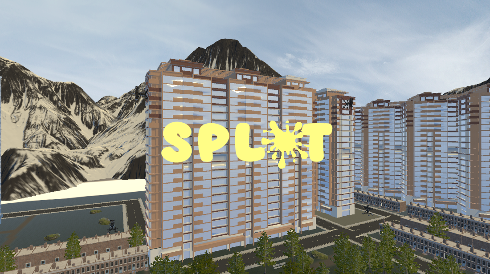
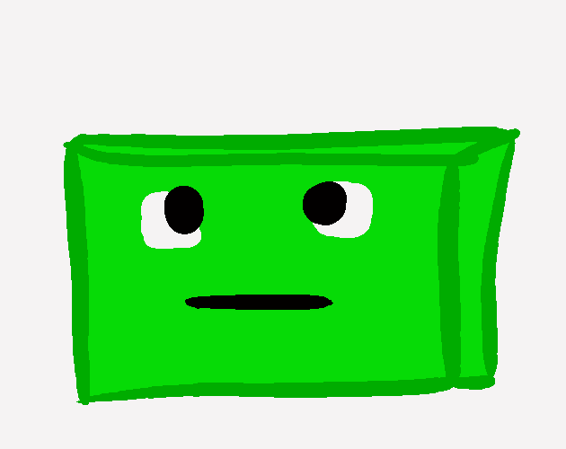
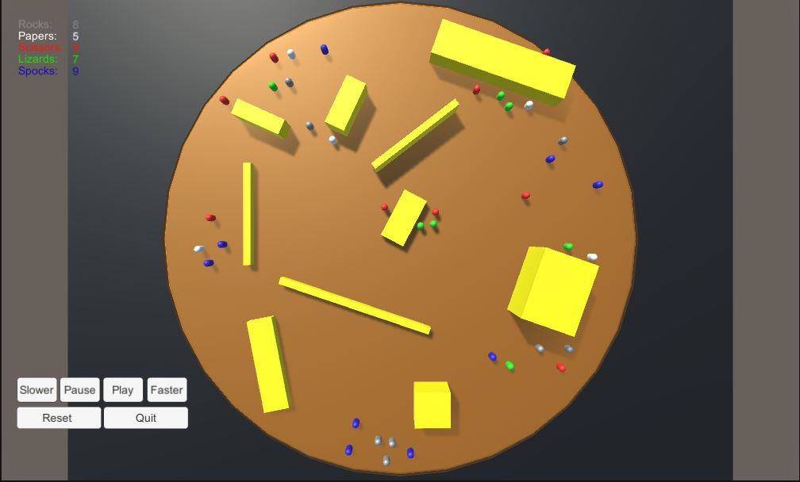
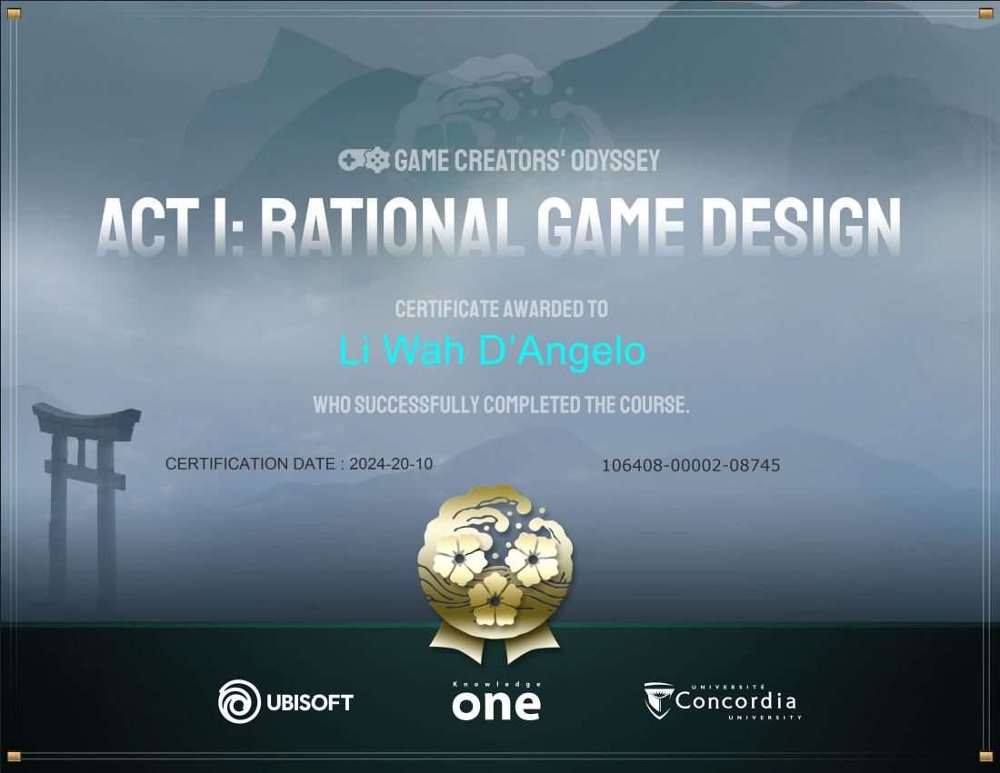

This project is a simulator built using Unity that uses an AI agent to navigate a trade boat between ports to deliver packages.
This simulator has 10 stages, each adding complexities to the map.
The trade boat's AI will allow it to take the fastest route between ports while avoiding collisions with obstacles and other ships, while also fleeing from pirate ships that seek out the trade ship.
The final level gives control of the primary trade boat to the player, as they compete against other AI trade boats to score the most points within the time limit by delivering packages without crashes.

Splat is an 3D arcade style game built with Unity in collaboration with two other developpers.
In this game, the player is a bird that flies around trying to poop on specific people, who are roaming around the city, to score points.
If they keep pooping on the correct target they will build a score multiplier.
As they do so, the cities defenses will fight back, shooting at the player. If the player is hit, they lose momentum and points.

Fruit Fuser is a Match 3 game built in Unity.
Swap two neighbouring fruits to make a match that is at least 3 long to score points. The bigger the match, the more points scored.
If a cascading match happens from the removal of the previously matched fruits, that match scores bonus points, increasing with each cascading match.
To complete the level, a minimum number of each fruit must be matched within the time limit and swap limit. The game consists of two levels, each with their own fruit spawning rules.

Slime-O-Tron-9000 is a movement based puzzle game made using Unity for the Lost Relic Games Game Jam 2022 in collaboration with 2 other developpers.
In this game, the player controls 3 connected slimes simultaniously and must move them to the goal area on the stage.
The slimes each leave a trail behind them which kills another slime if it walks on it. Red dies to Blue which dies to Yellow which dies to Red.
When the player moves the slimes, they all move in the same direction and each obstacle in the stage will progress one stage. For example, and arrow that is in flight will also move forward one tile each time the player moves.
The puzzles are designed around positioning the slimes appropriately and timing their movement around obstacles.

Where the Past Meets the Present is a stealth puzzle game built with Unity in collaboration with two other developpers.
The player is lost in the Forest of Time and they need to retrieve 4 gems from foxes that have stolen them from the time altar in order to fix time.
Portals have opened which allow the player to move between time periods (past, present, future).
The player must navigate between these time periods to successfully retrieve all the gems and avoid the foxes that can steal them back from you.
The foxes work together to corner the player and become more aggressive as the player is spotted more and has more gems.

This Unity project simulates 5 teams of 10 AI agents, each representing rocks, papers, scissors, lizards, and Spocks, in a shrinking arena.
Each team tries to seek agents from teams they beat while fleeing from teams they lose to and not running into walls or out of the arena.
Each agent spawn in a random location in the arena. When an agent touches another agent that defeats them or if they run out of the map, they are eliminated.
The simulation ends when one team is completely eliminated.
Rock beats scissors and lizards. Scissors beats paper and lizards. Paper beats rock and Spock. Lizard beats Spock and paper. Spock beats scissors and rock.

A certificate for completing Act 1 of the Game Creator Odeyssey, a course built by Ubisoft in collaboration with Concordia University.
This course teaches how to design video games and ends with the student designing a game prototype.
A certificate for completing Act 2 of the Game Creator Odeyssey, a course built by Ubisoft in collaboration with Concordia University.
This course builds on the previous course to teach how to design levels in video games ands end with the student building on their previous protype to levels and progession for the game.
Students must also record a pitch for the game they designed.